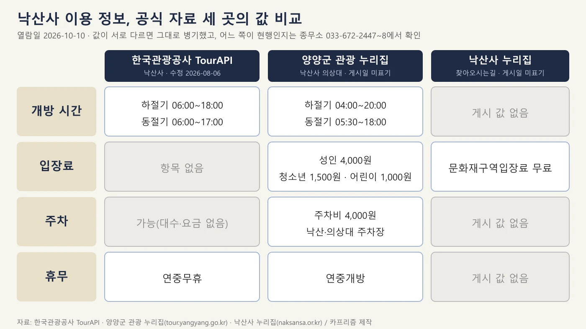
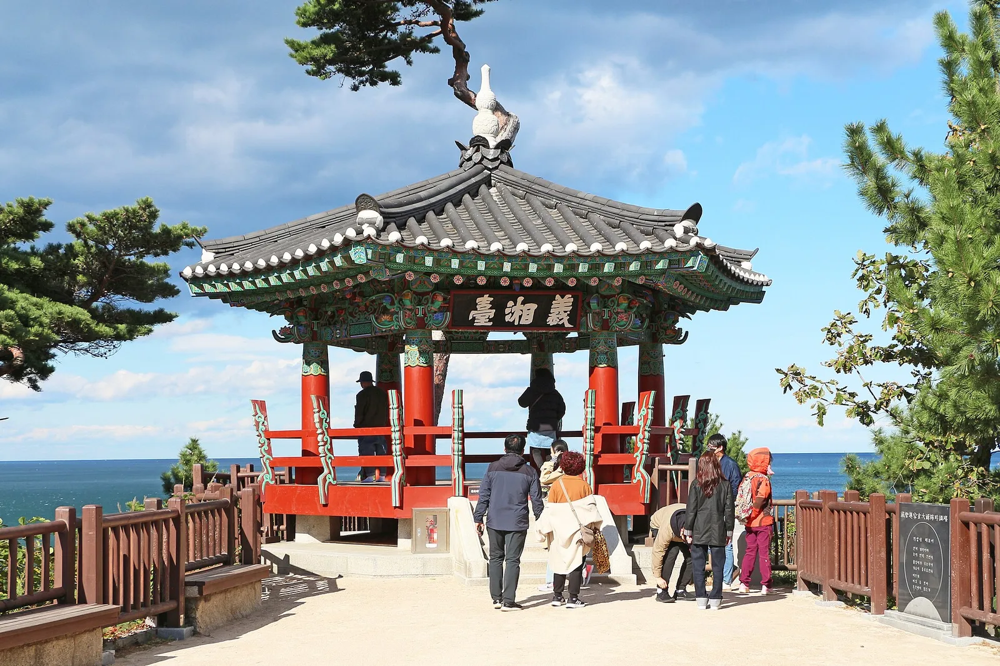
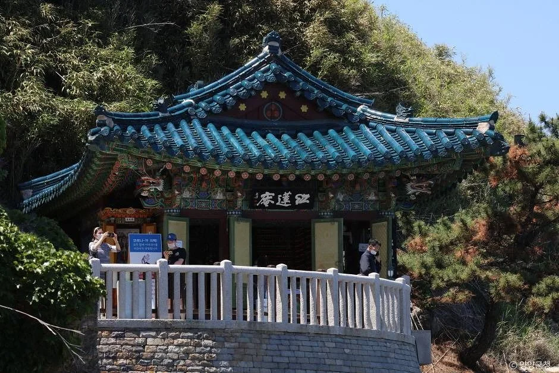
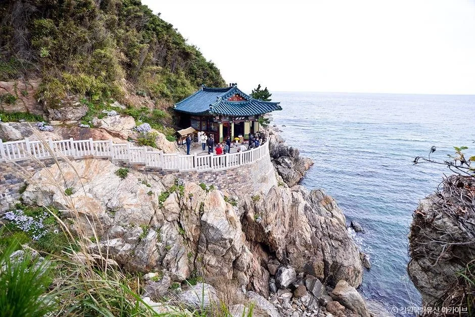
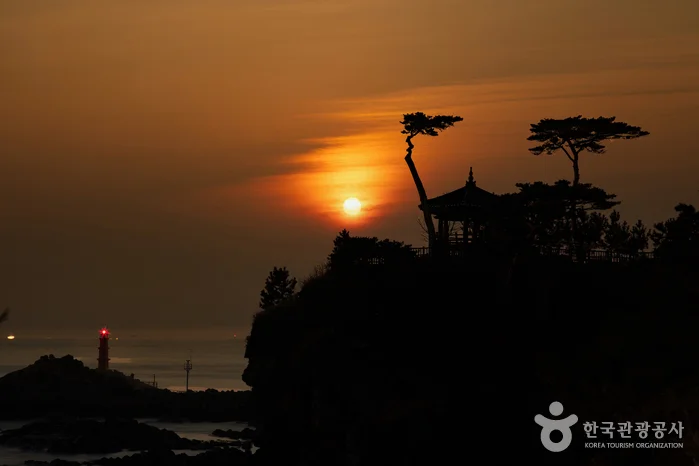
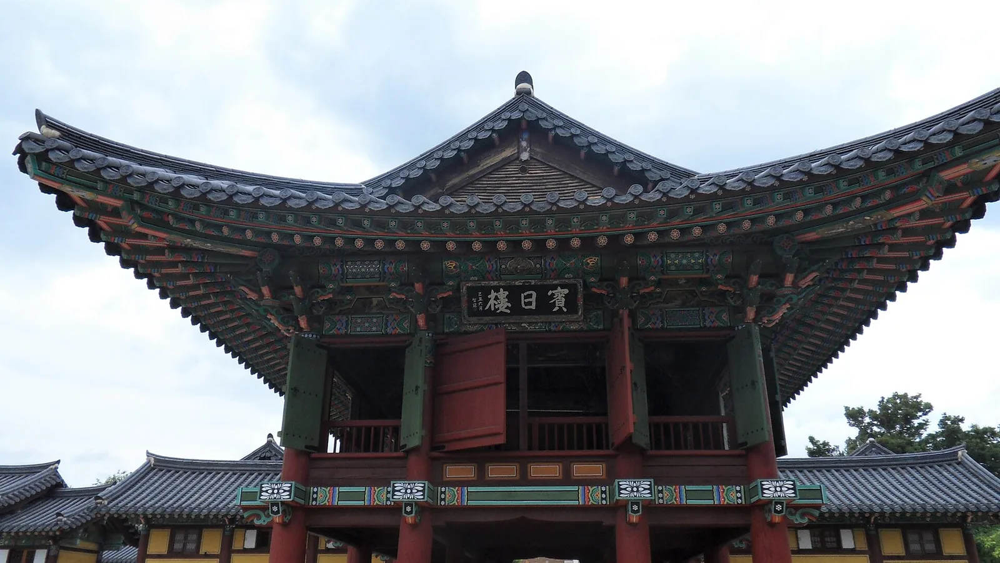
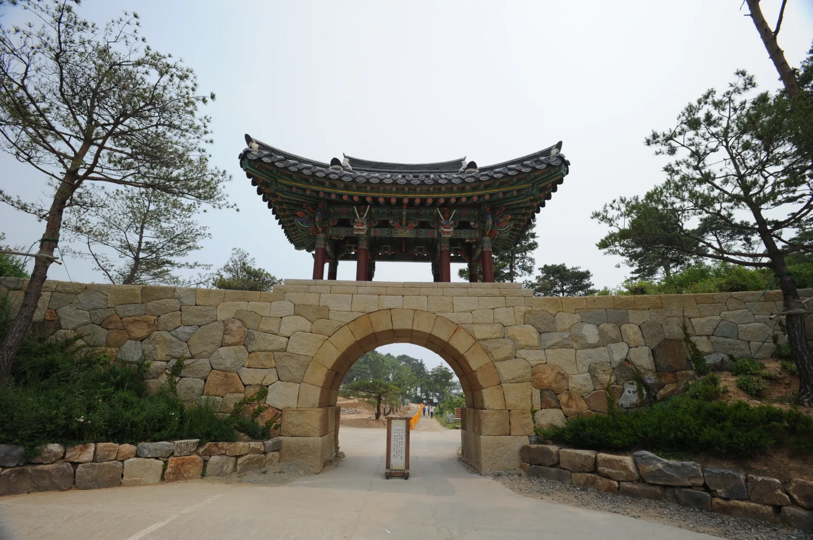
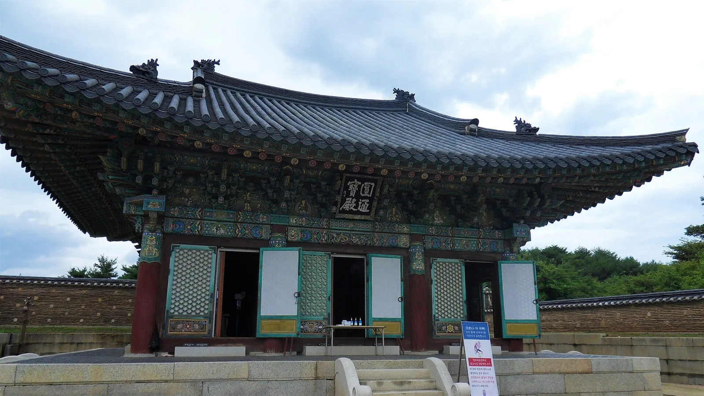
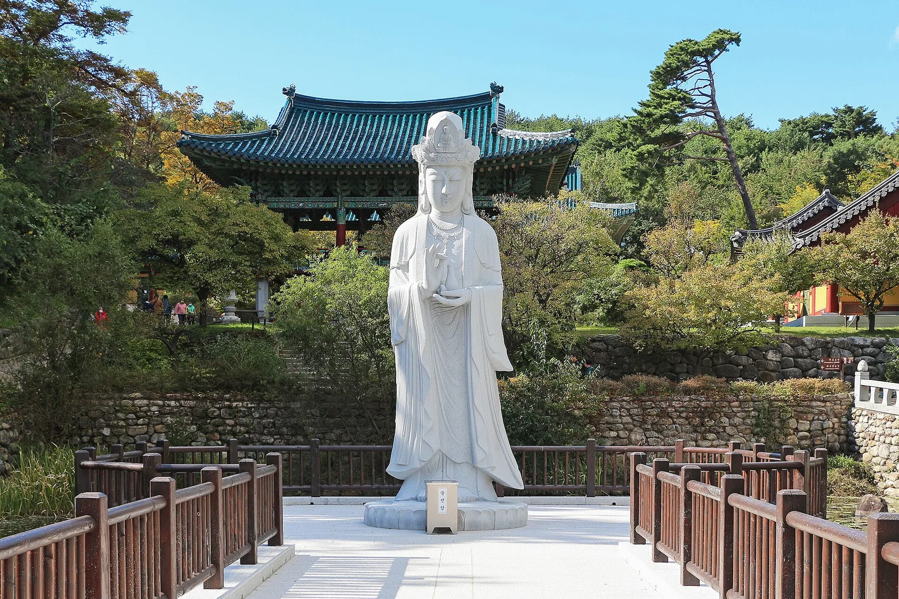
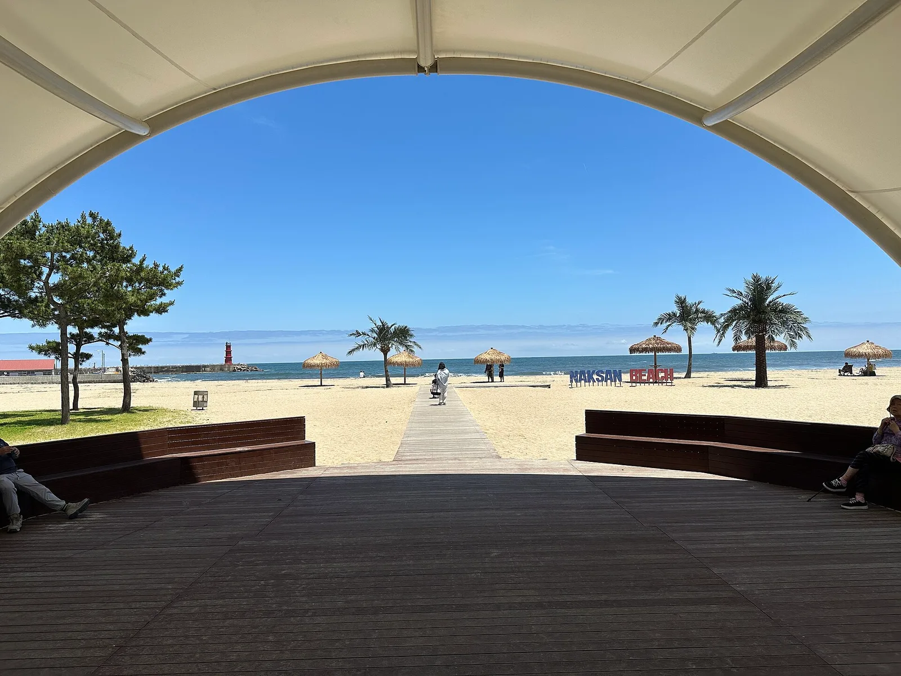

▲ 절벽 위에 선 낙산사 의상대 전경. 커먼즈에 2015년 10월 4일 촬영으로 기재돼 있다. 사진=Minquddyd(위키미디어 커먼즈, CC BY-SA 4.0)
"낙산사는 입장료가 무료일까, 4,000원일까?" 이 글을 쓰려고 공식 자료를 열어 보니 같은 절을 두고 세 곳의 안내가 서로 달랐다. 개방 시간은 한국관광공사 TourAPI가 하절기 06:00~18:00·동절기 06:00~17:00, 양양군 관광 누리집이 하절기 04:00~20:00·동절기 05:30~18:00이다. 입장료는 양양군 관광 누리집에 성인 4,000원·청소년 1,500원·어린이 1,000원이 적혀 있고, 낙산사 누리집 '찾아오시는길' 페이지에는 "문화재구역입장료 무료"라고 적혀 있다. 이 중 입장료는 근거를 찾았다. 낙산사는 2023년 5월 4일부터 문화재 관람료를 면제한 전국 65개 사찰에 포함된 것으로 보도됐고, 낙산사 누리집의 "문화재구역입장료 무료"와 맞아떨어진다. 양양군 누리집의 4,000원 표기가 무엇을 가리키는지는 확인하지 못했다. 개방 시간은 아직 한쪽으로 정리되지 않아 두 값을 나란히 적었다. 이 글은 2026년 10월 10일에 낙산사 누리집, 양양군 관광 누리집, TourAPI를 직접 열어 확인한 값을 썼다.
💡 먼저 결론
낙산사는 지금 방문하지 못할 이유(휴장·공사·통제)를 공식 자료에서 찾지 못했다. 입장료(문화재구역)는 무료로 보면 되지만, 개방 시간은 공식 자료끼리 값이 다르므로 출발 전에 낙산사 종무소(033-672-2447~8)에 확인하는 것이 가장 정확하다. 주차는 유료로 안내하는 곳이 있다(양양군 주차비 4,000원). 의상대·홍련암·해수관음상 같은 경내 볼거리와 2005년 산불 뒤 복원 경과, 낙산해변, 템플스테이 문의처는 공식 자료로 확인되는 만큼만 정리했다. 낙산사 누리집 바로가기
1. 한눈에 보기 — 공식 자료 세 곳의 값 비교
아래 도표는 개방 시간·입장료·주차·휴무를 출처별로 나란히 놓은 것이다. 입장료 칸의 "무료"는 아래 '입장료 해소' 문단의 근거로 정리한 값이다. 회색 칸은 그 출처에 해당 값이 없다는 뜻이다. 양양군 관광 누리집과 낙산사 누리집은 게시일이 표기돼 있지 않아 어느 쪽이 더 최근인지는 판단할 수 없었다.

▲ 출처별로 값이 다른 낙산사 이용 정보(열람일 2026-10-10). 사진=카프리즘 제작
| 항목 | TourAPI(수정 2026-08-06) | 양양군 관광 누리집 | 낙산사 누리집 |
|---|---|---|---|
| 개방 시간 | 하절기 06:00~18:00, 동절기 06:00~17:00 | 하절기 04:00~20:00, 동절기 05:30~18:00 | 게시 값 없음 |
| 입장료 | 항목 없음 | 성인 4,000원, 청소년 1,500원, 어린이 1,000원 | 문화재구역입장료 무료('찾아오시는길' 페이지) |
| 주차 | 가능(대수·요금 표기 없음) | 주차비 4,000원, 낙산주차장·의상대주차장 | 게시 값 없음 |
| 휴무 | 연중무휴 | 연중개방 | 게시 값 없음 |
| 문의 | 종무소 033-672-2447~8 | 033-672-2447~8 | 낙산사 033-672-2447~8 |
입장료는 이렇게 정리된다. 정부는 2023년 5월 4일부터 국가지정문화재를 보유한 조계종 등 65개 사찰의 문화재 관람료를 면제했고, 설악투데이(2023-05-01)는 "지역에선 백담사 신흥사 낙산사등이 해당된다"고 전했다. 뉴스타파도 관람료 감면 보조금 수혜 사찰로 양양 낙산사(지난해와 올해 합쳐 77억 원)를 꼽았다. 낙산사 누리집의 "문화재구역입장료 무료"는 이 면제와 같은 범위(문화재구역 입장료)를 가리키는 것으로 읽힌다. 다만 문화재청·국가유산청 원문 명단은 열어 확인하지 못했고, 양양군 누리집의 "성인 4,000원·청소년 1,500원·어린이 1,000원"이 면제 이전 요금이 남은 것인지, 별도 시설 입장료인지는 확인하지 못했다. 양양군 누리집은 게시일이 없다. 따라서 이 글은 입장료를 무료로 보되, 현장 키오스크 안내와 다르면 현장 안내를 따르라고 권한다.
개방 시간은 그대로 엇갈린다. 낙산사 누리집 새소식(총 166건, 2쪽 이후는 2023년 이전 글)에서도, 웹 검색에서도 하절기·동절기 구분 기간과 현행 시간을 확정할 근거를 찾지 못했다. 한 여행 매체는 "오전 6시부터 오후 6시까지"로 적었지만 계절 구분이 없어 근거로 삼지 않았다. 양양군 04:00~20:00 값은 '낙산사 의상대' 소개 페이지에 적혀 있어 경내 전체가 아닌 의상대 쪽 값일 가능성도 있으나 확인하지 못했다.
하절기·동절기가 각각 언제부터 언제까지인지는 어느 출처에도 적혀 있지 않았다. 그래서 10월 현재 어느 시간표가 적용되는지도 공식 자료로는 확인하지 못했다.
2. 지금 방문할 수 있나 — 공지 확인 결과
낙산사 누리집 '새소식' 첫 페이지(총 166건 중 최신 10건; 2쪽 이후는 2023년 이전 글이었다)에서 가장 최근 글은 2026년 2월 3일 '정초기도 입재 안내'였고, '낙산사 지도 안내'(2025-12-04), '2026년 낙산사 불교교양대학 입학 안내'(2026-01-27) 등이 뒤를 이었다. 이 10건 안에서 휴장·공사·출입 통제를 알리는 글은 없었다. TourAPI의 낙산사 항목은 2026년 8월 6일에 수정됐고 휴무는 "연중무휴"로 적혀 있다.
| 확인한 곳 | 확인 내용 | 판단 |
|---|---|---|
| 낙산사 누리집 새소식 1쪽 | 최신 글 2026-02-03, 휴장·통제 공지 없음 | 공지 없음(2026년 하반기 글도 없음) |
| TourAPI 낙산사·홍련암·의상대 | 연중무휴 | 폐쇄 표기 없음 |
| 양양군 관광 누리집 | 연중개방 | 폐쇄 표기 없음 |
다만 누리집에 공지가 없다는 것이 "오늘 이상 없다"는 보증은 아니다. 사찰 행사나 산불 위험에 따른 임시 통제는 누리집에 늦게 올라올 수 있으니, 출발 당일 종무소 전화로 확인하는 편이 안전하다.
3. 개방 시간·입장료·주차 — 확인된 값만
낙산사 안의 시설별로도 시간이 다르게 적혀 있다. 아래 표는 TourAPI와 무장애 관광정보(열린관광)에 올라 있는 시설별 값이다.
| 장소 | 시간 | 휴무·주차 | 출처·수정일 |
|---|---|---|---|
| 낙산사 | 하절기 06:00~18:00, 동절기 06:00~17:00 | 연중무휴, 주차 가능 | TourAPI(2026-08-06) |
| 낙산사 의상대 | 06:00~18:30(입장 마감 17:30) | 연중무휴, 장애인 주차장 있음, 유모차 불가 | TourAPI(2025-03-13), 무장애 관광정보(2025-08-14) |
| 홍련암 | 06:00~17:00 | 연중무휴, 주차 가능, 문의 033-672-2478 | TourAPI(2025-07-18) |
| 낙산해수욕장 | 상시 개방 | 연중무휴, 주차 소형 150대 | TourAPI(2026-03-11) |
낙산사와 의상대의 마감 시각이 서로 다르게(18:00 / 18:30) 적혀 있으므로, 해 질 무렵에 가려면 가장 이른 값인 17:00~18:00을 기준으로 잡는 편이 안전하다. 양양군 관광 누리집은 "들어가는 입구에 입장료 안내와 입장 시간이 적혀 있다"며 키오스크로 입장권을 발급받는다고 소개하는데, 이 문장과 낙산사 누리집의 "무료" 표기가 어떻게 양립하는지는 확인하지 못했다. 2023년 면제 이후라면 문화재구역 입장은 무료로 보이므로, 현장에서 입장권 안내가 나오면 무엇에 대한 요금인지 매표소에 물어보자. 주차는 양양군 관광 누리집이 낙산주차장과 의상대주차장 두 곳으로 나뉜다고 소개하며, 의상대주차장은 가깝지만 차가 많아 대기할 수 있고 낙산주차장은 비교적 한산하다고 안내한다.
의상대 주차 대기가 걱정된다면 같은 동해안 주차 사정을 다룬 속초·여수·전주·강화 주차 난도 비교 기사도 참고할 만하다.
4. 경내 핵심 볼거리 — 의상대·홍련암·해수관음상
TourAPI 소개에 따르면 낙산사는 신라 문무왕 11년(671) 의상대사가 창건한 고찰로, 강화 보문사·남해 보리암과 함께 한국 3대 관음성지로 꼽히며 관동팔경의 한 곳이다. 대표 볼거리는 16m 높이의 해수관음상, 해안 절벽 위 정자인 의상대, 바다를 굽어보는 암자 홍련암, 보물로 지정된 양양 낙산사 칠층석탑 등이다.

▲ 낙산사 의상대. 커먼즈에 2022년 10월 10일 촬영으로 기재돼 있다. 사진=Bernard Gagnon(위키미디어 커먼즈, CC0)
| 장소 | 공식 소개에서 확인되는 내용 | 출처 |
|---|---|---|
| 의상대 | 홍련암 관음굴로 가는 바닷가 절벽 위 정자. 1925년 의상대사의 업적을 기려 지었고, 현재 모습은 1995년 육각정으로 복원한 것. "양양 낙산사 의상대와 홍련암"이라는 이름으로 명승 지정. 양양10경 제8경 | TourAPI, 양양군 관광 누리집 |
| 홍련암 | 의상대에서 북쪽으로 약 200m 떨어진 해안 절벽 위 암자. 법당 마루 아래로 바닷물이 출렁이는 모습이 내려다보임. 의상대사가 7일간 좌선하던 중 붉은 연꽃 속에서 관음보살이 나타났다는 전설이 전해짐 | TourAPI |
| 해수관음상 | 높이 16m. 누리집은 해수관음상 주변을 108법륜석으로 장엄했다고 소개 | TourAPI, 낙산사 누리집 |
| 빈일루 | "해를 맞이하는 누각"이라는 뜻. 원통보전으로 향하는 길 중심에 자리하며, 현판은 전 총무원장 지관스님이 쓴 것 | 낙산사 누리집 |
| 원통보전·칠층석탑 | 칠층석탑은 조선 시대에 지었으나 고려 시대 양식을 이은 보물. 복원 때 원통보전에 후불탱화와 신중탱화를 모심 | TourAPI, 낙산사 누리집 |
| 의상기념관·다래헌 | 입장 직후 보이는 곳. 의상기념관은 의상대사 영정·일대기·저술과 2005년 산불로 소실된 문화재를 전시. 다래헌은 기념품·커피·음료 판매 | 양양군 관광 누리집 |

▲ 홍련암 법당. 촬영 시기는 확인하지 못했다. 사진=한국관광공사(공공누리 제3유형)

▲ 바다 쪽 절벽 위에 자리한 홍련암의 모습. 사진=한국관광공사(공공누리 제3유형)
의상대에서 홍련암까지는 TourAPI 기준 북쪽으로 약 200m다. 이 구간을 걷는 데 걸리는 시간과 경내 전체 관람 소요 시간은 공식 자료에서 확인하지 못해 적지 않았다. 의상대는 일출 명소로 알려져 있다고 TourAPI가 소개하지만, 올해 해 뜨는 시각이나 새벽 개방 여부는 확인하지 못했다.

▲ 해 뜨거나 질 무렵으로 보이는 시각에 담은 의상대 쪽 풍경. 촬영 시기는 확인하지 못했다. 사진=한국관광공사(공공누리 제3유형)

▲ 낙산사 빈일루. 커먼즈에 2021년 8월 2일 촬영으로 기재돼 있다. 사진=Ashy Minivet(위키미디어 커먼즈, CC0)
5. 2005년 산불과 복원 — 누리집이 밝힌 경과
낙산사 누리집의 '복원 불사 안내'에 따르면 낙산사는 2005년 4월 5일 지역을 덮친 대형 산불로 전소에 가까운 피해를 입었다. TourAPI는 이때 보물로 지정돼 있던 동종을 비롯해 20여 채의 전각이 소실됐고 현재는 모두 복원됐다고 소개한다. 복원 경과는 다음과 같다.
| 시점 | 내용 |
|---|---|
| 2005년 4월 5일 | 대형 산불로 도량이 전소에 가까운 피해 |
| 2007년 11월 16일 | 1차 복원 회향 |
| 2009년 10월 12일 | 2차 복원불사 회향식 |
누리집은 복원 방식도 소개한다. 2년 여에 걸친 발굴조사 결과와 전문가 자문을 바탕으로 사격(寺格)을 되살렸고, 조선 세조 때의 모습이 잘 반영된 단원 김홍도의 〈낙산사도〉를 기본 모형으로 삼았다고 한다. 빈일루, 응향각, 정취전, 설선당, 고향실, 송월요, 근행당 등 7동의 주요 전각이 이 모형을 바탕으로 지어졌다. 화재 대비로는 주요 전각마다 수막시설과 방화사·방화수·소화기를 설치하고, 전각 인근에는 화재에 강한 나무를 심었다고 밝힌다.

▲ 낙산사 홍예문 일대. 촬영 시기는 확인하지 못했다. 사진=문화재청(공공누리 제1유형, 위키미디어 커먼즈)

▲ 낙산사 원통보전. 커먼즈에 2021년 8월 2일 촬영으로 기재돼 있다. 사진=Ashy Minivet(위키미디어 커먼즈, CC0)

▲ 경내 연못 위에 선 보살상. 상의 명칭은 확인하지 못했고, 커먼즈에는 2022년 10월 10일 촬영으로 기재돼 있다. 사진=Bernard Gagnon(위키미디어 커먼즈, CC0)
6. 낙산해변과 낙산해안로 — 양양군·TourAPI 정보
낙산사 바로 곁에는 낙산해수욕장이 있다. TourAPI에 따르면 1963년 개장했고, 울창한 소나무 숲 앞으로 4km의 모래사장이 펼쳐지며 수심은 1.5m 내외다. 해수욕장 끝에는 낙산항이 있고 그 뒤로 낙산사가 있는 낙산이 굽어본다. 상시 개방, 연중무휴이고 주차는 소형 150대로 안내된다. 문의는 양양군 관광문화과(033-670-2518)다.

▲ 낙산해변. 커먼즈에 2026년 6월 23일 촬영으로 기재된 사진이다. 사진=Grapesurgeon(위키미디어 커먼즈, CC BY-SA 4.0)
| 장소 | 확인된 정보 |
|---|---|
| 낙산해수욕장 | 주소 양양군 강현면 해맞이길 55, 4km 백사장, 상시 개방, 주차 소형 150대 |
| 낙산항 | 주소 양양군 강현면 낙산사로 54-10, 낙산해수욕장 인근, 횟감을 맛볼 수 있다고 소개 |
| 낙산해안로 | 물치항·설악해변·낙산사·낙산해변·동해신묘·낙산대교로 이어지는 약 16.3km 해안로, 드라이브 코스로 소개 |
해수욕장 항목에는 개장 기간으로 "7.12~8.25"가 적혀 있으나 연도 표기가 없어 올해 운영 기간인지 확인하지 못했다. 어느 해의 값이든 10월은 이 기간 밖이므로 해수욕을 하러 가는 시기는 아니다. 낙산해변 달빛 모닥불축제는 TourAPI상 2026년 2월 28일~3월 1일에 끝난 행사라 이 글에서는 제외했다.
7. 템플스테이 — 확인되는 것과 확인하지 못한 것
TourAPI의 낙산사 항목에는 체험 안내로 "템플스테이"가, 문의처로 템플스테이 033-672-2417이 올라 있다. 낙산사 누리집 메인 메뉴에도 한국불교문화사업단 템플스테이 낙산사 페이지로 가는 링크가 있다. 다만 템플스테이 누리집은 접속이 막혀(403) 프로그램 종류·가격·예약 가능 여부는 직접 확인하지 못했다. 템플스테이 예약이 얼마나 치열한지는 템플스테이 예약 경쟁 기사에서 다뤘고, 낙산사는 이 글에서 요금·일정을 단정하지 않는다.
8. 가는 길 — 낙산사 누리집 안내 그대로
아래는 낙산사 누리집 '찾아오시는길'에 적힌 내용이다. 이 페이지도 게시일이 표기돼 있지 않아 버스 요금·운행 시각은 싣지 않았고, 경로만 옮겼다. 가는 길의 소요 시간은 교통 상황에 따라 달라지므로 따로 추정하지 않았다.
| 출발 | 안내 내용 |
|---|---|
| 양양 시내 | 양양터미널에서 속초행 시내버스를 타고 약 10분 뒤 낙산에서 하차 |
| 속초 | 속초에서 양양행 버스(9, 9-1)를 타고 낙산에서 하차 |
| 서울(자가용) | 강일IC→춘천→동홍천→양양IC→낙산사, 또는 판교IC→호법IC→만종IC→강릉JC→양양IC→낙산사 |
| 서울→속초→낙산사 | 덕소삼패IC→동홍천IC→설악로→미시령로→미시령TG→속초→낙산사 |
| 대전·광주 방면 | 회덕IC(광주는 광주→회덕IC)→남이IC→호법IC→만종IC→강릉분기점→양양IC→낙산사 |
| 대구·울산·부산 방면 | 대구는 만종IC→강릉분기점→양양IC→낙산사, 울산은 경주→양양IC→낙산사, 부산은 울산→경주→양양IC→낙산사 |
교통 문의처는 낙산사 033-672-2447~8, 양양군청 교통계 033-670-2356, 양양시외버스정류장 033-671-4411이다.
9. 동해안 드라이브로 잇기 — 기존 기사와 각도 구분
양양 낙산사는 동해안 북쪽 드라이브의 중간 기착지로 묶기 좋다. 이 글은 낙산사 한 곳의 이용 정보와 공식 자료의 차이에 집중했고, 인접 지역은 이미 다룬 기사로 이어 본다.
- 양양 송이·미식: 송이 산지 양양의 먹거리와 낙산사·하조대 연계는 양양 송이 기사에서 다뤘다.
- 속초: 아바이마을 갯배 등은 속초 여행 기사에서 다뤘다.
- 고성: 통일전망대·화진포 출입신고는 고성 통일전망대 기사를 보자.
- 강릉·정동진: 강릉 안목 커피거리와 정동진 일출 기사가 있다.
- 동해: 무릉계곡 베틀바위 기사와 부산~고성 7번 국도 드라이브 기사로 이어진다.
- 설악산 단풍철: 소공원 통제는 설악산 수신호 통제 기사, 절정 시기는 단풍 주말표와 산림청 공식 지도 기사를 참고하자.
이 글은 낙산사 구간의 이동 시간·혼잡도를 추정하지 않았다. 단풍철 갓길 단속은 단풍철 갓길 주정차 기사에서 따로 확인할 수 있다.
10. 출발 전 주의 — 계절·마감·산불
- 동절기 단축: TourAPI는 동절기 마감을 17:00로, 양양군 관광 누리집은 18:00로 적었다. 겨울에는 이른 쪽을 기준으로 삼자.
- 의상대 입장 마감: 무장애 관광정보에는 의상대 "입장 마감 17:30"이 적혀 있다. 해 질 무렵 방문은 서두르는 편이 좋다.
- 산불조심기간: 낙산사는 2005년 산불을 겪은 곳이다. 가을·봄 산불철의 임시 통제 여부는 입산통제 날짜 정리 기사와 종무소 전화로 확인하자.
- 문화재·종교 시설: 홍련암 등 법당에서는 낙산사 누리집 '불교예절' 안내처럼 단정한 복장과 정숙을 지킨다.
- 유모차: 의상대는 TourAPI에 유모차 불가로 표기돼 있다.
✅ 출발 전 체크리스트
· 개방 시간: TourAPI 06:00~18:00(동절기 17:00), 양양군 04:00~20:00(동절기 05:30~18:00) — 종무소 033-672-2447~8로 확인
· 입장료: 낙산사 누리집 "문화재구역입장료 무료"(2023-05-04 관람료 면제 대상 사찰). 양양군 누리집 성인 4,000원·청소년 1,500원·어린이 1,000원 표기는 의미 미확인 — 현장 안내 확인
· 주차: 낙산주차장·의상대주차장, 양양군 안내 주차비 4,000원
· 홍련암 06:00~17:00(033-672-2478), 템플스테이 033-672-2417
· 낙산사 누리집에서 휴장·공사 공지는 확인되지 않음(최신 글 2026-02-03) 새소식 바로가기
11. 정리
낙산사는 휴장·공사 공지를 공식 자료에서 찾지 못해 방문 가능으로 보이지만, 입장료는 문화재 관람료 면제 대상이라 무료로 정리되지만, 개방 시간(06:00~18:00 대 04:00~20:00)은 공식 자료끼리 값이 달라 종무소 확인이 필요하다.
의상대 북쪽 약 200m의 홍련암(06:00~17:00), 16m 해수관음상, 2005년 4월 5일 산불 뒤 2007년·2009년 복원 회향 경과는 공식 자료로 확인했다. 낙산해수욕장은 상시 개방·소형 150대 주차이며, 템플스테이는 033-672-2417로 문의한다. 양양군 누리집의 4,000원 표기 의미, 하절기·동절기 기간 구분, 경내 관람 소요 시간, 템플스테이 프로그램·가격은 확인하지 못했다.